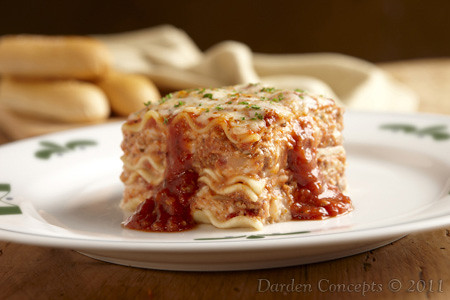

Homemade Lasagna

Lasagna is my favorite Italian dish, and one of my favorite dishes among all!
A fresh, homemade lasagna can brighten anyone's day!
Let's cook this layered classic!
Preparation/Outcome
- Prep Time: 1 hour, 25 minutes
- Cook Time: 1 hour, 15 minutes
- Additional Time: 10 minutes
- Total Time: 2 hours, 50 minutes
- Serves: 8
- Yield: 1 (9x13) inch lasagna
Ingredients
- Meat: 1 half pound of ground pork, 1 half pound gound beef
- Onion: Diced
- Canned Tomatoes: A can of tomato sauce, a can of crushed tomatoes
- Herbs: Two tablespoons of parsley, one clove of garlic
- Sugar: A dash
- Spices/Seasonings: Dried basil, dried oregano, salt, and black pepper
- Noodles: Uncooked lasagna noodles
- Cheese: Cottage cheese, parmesan cheese, and shredded mozzarella
- Eggs: For making the chesse layers soft and creamy
Steps
- Cooking Meat: Cook the ground meat (until brown) in a skillet and crushed into bits.
Add the diced onion to the skillet and cook until translucent.
Add both cans of tomatoes and the spices/seasonings, stir the contents.
Use half of your parsley, garlic, and basil.
Add 1.5 teaspoons of salt, oregano, and sugar, respectively.
- Cooking Noodles: Boil the lasagna noodles in lightly salted water until they're al dente (firm, but not hard).
- The Cheese Layer: Mix cottage cheese, parmesan cheese, eggs, the remaining parsley, remaining salt, and remaining pepper in a bowl.
- Layer The Pan: Start by layering the pan with the meat sauce, then cover with noodles completely, then layer cheese and spice blend.
Repeat until ending with a layer of cheese.
- Baking The Lasagna: Cover the pan with foil and place inside a preheated oven at 375 degrees Fahrenheit. Cook for 30-40 minutes with pan covered, and another 5-10 minutes oncovered.